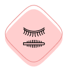

Máscara exclusiva para pestanas Charming Lash Feita com tecnologia 4D, simultaneamente dá volume às pestanas, torna-as mais longas, curva as pontas e tinge cuidadosamente as raízes. O seu olhar torna-se expressivo e brilhante, e o "efeito gato" dá-lhe uma flauta cativante e glamorosa.
Máscara de pestanas

39€ 78€
Capture todos com o seu olhar!
 Aumenta